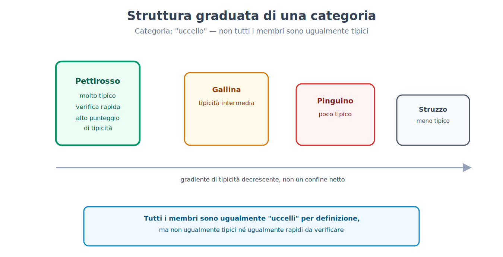
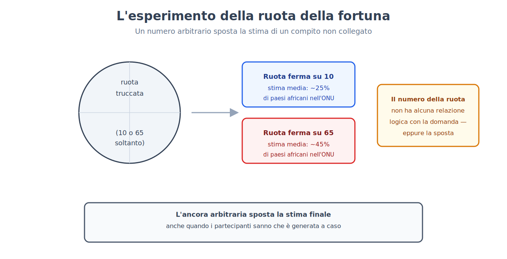
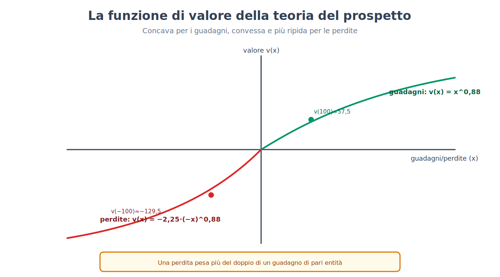
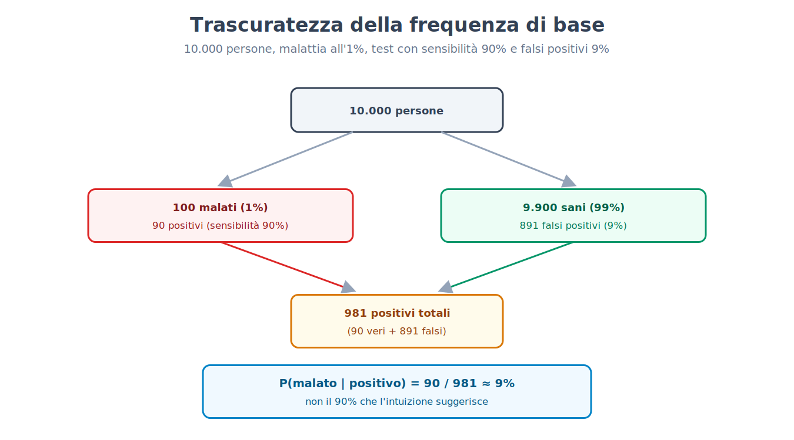
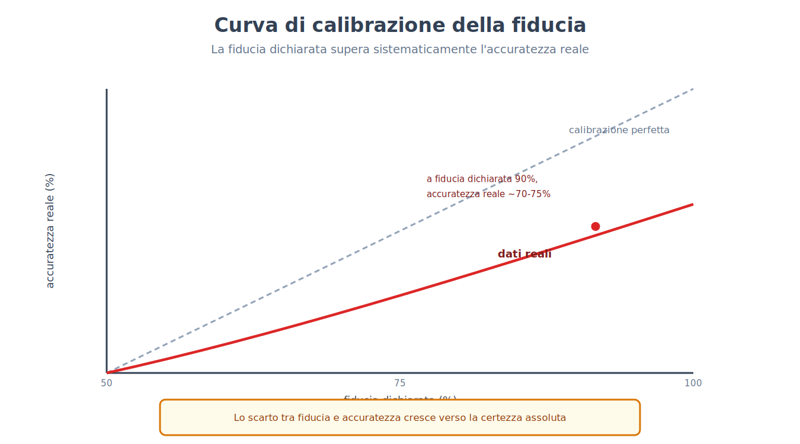
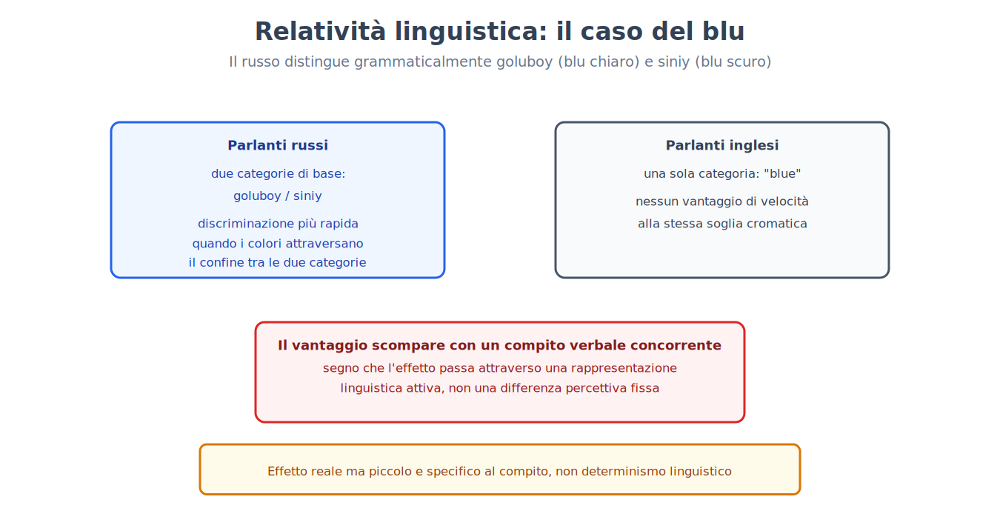

Parte VII. Cognizione, ragionamento, errori sistematici
Capitolo 41 — Concetti e categorie
[IN DUE PAROLE]
Riconoscere che un animale a strisce nero e bianco è una zebra richiede di avere un concetto di zebra — ma che cosa è, esattamente, un concetto? Questo capitolo espone perché il tentativo più intuitivo di rispondere (un concetto come una lista di condizioni necessarie e sufficienti) non regge ai dati, e quali modelli lo hanno sostituito.
Un problema che il comportamentismo non poteva nemmeno porre
Il capitolo 19 ha mostrato come, verso la fine degli anni Cinquanta, i limiti del comportamentismo (l'incapacità di rendere conto di fenomeni come l'acquisizione del linguaggio o l'apprendimento osservativo senza fare riferimento a rappresentazioni interne) aprirono la strada alla svolta cognitivista (cognitive revolution): la disponibilità a trattare la mente come un sistema di elaborazione dell'informazione, con stati interni legittimamente oggetto di studio scientifico, non solo comportamenti osservabili. La domanda "che cos'è un concetto, e come è rappresentato nella mente" è precisamente il tipo di domanda che il comportamentismo, per costruzione teorica, si vietava di porre: un concetto è uno stato interno, non un comportamento.
Per secoli, la risposta filosofica dominante alla domanda "che cos'è un concetto" è stata la visione classica: un concetto è definito da un insieme di condizioni necessarie e sufficienti all'appartenenza alla categoria. "Scapolo" significa "uomo adulto non sposato": ogni condizione è necessaria, e la loro congiunzione è sufficiente. Il problema è che, per la stragrande maggioranza dei concetti naturali usati quotidianamente — "gioco", "uccello", "mobile", "frutta" — nessuno è mai riuscito a specificare un insieme di condizioni che includa tutti i casi accettati come membri e escluda tutti i non membri, senza eccezioni.
I membri di una categoria non sono tutti uguali
Il primo indizio sperimentale contro la visione classica fu la scoperta che i membri di una categoria non vengono trattati come equivalenti: alcuni sono giudicati esempi migliori, più "tipici", di altri.
[IL DISEGNO DELL'ESPERIMENTO]
Ai partecipanti viene chiesto di giudicare, su una scala numerica, quanto bene un elemento rappresenti una categoria data (per esempio, quanto "pettirosso" rappresenti bene la categoria "uccello", rispetto a "pinguino" o "struzzo"). I giudizi di tipicità risultano notevolmente concordi tra partecipanti diversi, non casuali: il pettirosso riceve punteggi di tipicità sistematicamente più alti del pinguino. In un secondo compito, si misura il tempo di reazione necessario a verificare affermazioni come "un pettirosso è un uccello" contro "un pinguino è un uccello": le verifiche su membri tipici sono sistematicamente più rapide di quelle su membri atipici, nonostante entrambe le affermazioni siano ugualmente vere. Se l'appartenenza a una categoria fosse una questione di tutto-o-niente basata su condizioni fisse, non ci sarebbe ragione per una simile differenza di tempo o di giudizio.
Questo risultato — attribuito principalmente agli studi sulla tipicità di Eleanor Rosch (esperimenti di giudizio di tipicità e tempo di verifica, anni Settanta) — la struttura graduata (graded structure) delle categorie — portò alla teoria del prototipo (prototype theory): un concetto è rappresentato non da un elenco di condizioni, ma da un prototipo, una rappresentazione delle caratteristiche centrali e più tipiche della categoria (spesso una sorta di media statistica dei membri incontrati), e l'appartenenza di un nuovo elemento viene giudicata in base alla sua somiglianza con quel prototipo, non alla verifica di condizioni fisse. Un modello alternativo, la teoria degli esemplari (exemplar theory), propone che non esista affatto un prototipo astratto: la categorizzazione avverrebbe confrontando il nuovo elemento con la memoria di esemplari specifici già incontrati, non con una media riassuntiva. I due modelli fanno previsioni diverse in alcune condizioni sperimentali (per esempio sulla sensibilità alla variabilità interna della categoria), e la ricerca attuale suggerisce che entrambi i meccanismi possano contribuire, in proporzioni diverse a seconda del compito e dell'esperienza della persona con quella categoria specifica.

Le gerarchie hanno un livello privilegiato
Le categorie non esistono isolate, ma organizzate in gerarchie di inclusione: un pastore tedesco è un cane, che è un mammifero, che è un animale. Tra i livelli possibili, uno riceve un trattamento cognitivo privilegiato: il livello base (basic level) — "cane", non "mammifero" (livello sovraordinato, troppo generale) né "pastore tedesco" (livello subordinato, troppo specifico). Il livello base è quello a cui le persone nominano spontaneamente un oggetto, quello per cui esistono più caratteristiche condivise distintive rispetto alle categorie vicine allo stesso livello, e quello per cui è possibile formare un'immagine mentale unica e riconoscibile (è facile immaginare "un cane", difficile immaginare "un mammifero" in generale, relativamente facile ma già più specifico immaginare "un pastore tedesco").
[IL PUNTO CHIAVE DEL CAPITOLO]
• La visione classica dei concetti (condizioni necessarie e sufficienti) non regge ai dati per la maggior parte dei concetti naturali, che non ammettono una definizione priva di eccezioni.
• I giudizi di tipicità e i tempi di verifica mostrano che le categorie hanno una struttura graduata: alcuni membri sono giudicati esempi migliori di altri.
• La teoria del prototipo (confronto con una rappresentazione centrale astratta) e la teoria degli esemplari (confronto con casi specifici in memoria) sono i due modelli principali proposti per spiegare questa struttura graduata, probabilmente entrambi parzialmente corretti.
• Le gerarchie di categorie hanno un livello base privilegiato dal punto di vista cognitivo, né troppo generale né troppo specifico.
Capitolo 42 — Due modi di pensare
[IN DUE PAROLE]
Un'idea diventata estremamente popolare, anche fuori dalla psicologia, distingue due modalità di elaborazione mentale: una rapida e automatica, una lenta e controllata. Questo capitolo espone che cosa questo modello descrive bene, e perché il suo statuto come teoria psicologica formale — non solo come metafora descrittiva utile — resta oggetto di un dibattito interno alla disciplina, spesso invisibile a chi la incontra nella sua versione divulgativa.
Un'etichetta per due profili di elaborazione molto diversi
Il modello, nella sua formulazione più diffusa (Keith Stanovich e Richard West, che hanno introdotto l'etichetta "Sistema 1/Sistema 2" nel 2000), distingue il Sistema 1, un'elaborazione rapida, automatica, che richiede poco o nessuno sforzo cognitivo deliberato, spesso inaccessibile all'introspezione nei suoi meccanismi (leggere una parola scritta nella propria lingua, riconoscere un volto familiare, provare un'emozione immediata di fronte a un'immagine), e il Sistema 2, un'elaborazione lenta, deliberata, che richiede attenzione e risorse limitate, e che può essere interrotta se le risorse vengono impegnate altrove (risolvere un'equazione, valutare un argomento complesso, decidere tra due opzioni con molte variabili in gioco). Il modello si collega direttamente alla distinzione tra elaborazione automatica ed elaborazione controllata già incontrata nei capitoli 30 e 31 a proposito dell'attenzione e dell'automatismo: il Sistema 1 opera con un carico attentivo minimo, il Sistema 2 richiede le stesse risorse attentive limitate descritte in quel capitolo, ed è quindi vulnerabile a essere sopraffatto quando quelle risorse sono impegnate altrove.
Il modello ha un notevole potere descrittivo ed esplicativo per organizzare fenomeni altrimenti sparsi: molte delle euristiche trattate nel capitolo 43, per esempio, sono descritte come prodotti tipici del Sistema 1 — risposte rapide, spesso corrette, ma sistematicamente distorte in situazioni costruite apposta per isolarne i limiti.
Un modello utile non è automaticamente una teoria corretta
[QUESTIONE CONTROVERSA]
All'interno della psicologia cognitiva, un gruppo consistente di ricercatori ha sollevato obiezioni serie allo statuto teorico del modello a due sistemi, distinguendo la sua utilità come metafora descrittiva (raggruppare fenomeni con proprietà simili sotto due etichette comode) dalla sua validità come teoria esplicativa con un meccanismo cerebrale specifico e unificato. Le obiezioni principali includono: l'assenza di un confine netto e misurabile tra i due sistemi (molti compiti mostrano gradazioni intermedie di automaticità, non una dicotomia pulita); il fatto che "Sistema 1" e "Sistema 2" raggruppino, sotto la stessa etichetta, processi con basi neurali e proprietà computazionali molto diverse tra loro (l'automaticità del riconoscimento di un volto e quella di un riflesso condizionato hanno poco in comune dal punto di vista dei meccanismi coinvolti); e il rischio che l'etichetta stessa diventi una spiegazione apparente ("ha sbagliato perché ha usato il Sistema 1") che maschera l'assenza di un meccanismo causale specificato. I sostenitori del modello rispondono che nessuna teoria psicologica di questo livello di generalità evita gradazioni interne, e che la sua capacità di generare previsioni verificate empiricamente (per esempio, prevedere quali condizioni sperimentali aumentino o riducano un errore sistematico) è comunque un segno di validità scientifica, indipendentemente dal fatto che i "due sistemi" corrispondano a due strutture neurali nettamente separate. Il dibattito resta aperto: il modello è ampiamente usato come strumento didattico ed euristico di ricerca, con una cautela crescente, negli ambienti accademici, contro il trattarlo come una scoperta di due meccanismi cerebrali distinti e localizzabili.
Questa distinzione tra utilità descrittiva e validità di meccanismo si collega direttamente al confronto tra elaborazione attenta e automatica del capitolo 31: alcuni degli stessi risultati sperimentali possono essere descritti equivalentemente nel linguaggio dell'attenzione selettiva o in quello dei due sistemi, un segno che le due cornici concettuali si sovrappongono più di quanto la loro origine indipendente farebbe pensare.
[IL PUNTO CHIAVE DEL CAPITOLO]
• Il modello a due sistemi distingue un'elaborazione rapida e automatica (Sistema 1) da una lenta e controllata (Sistema 2), collegandosi direttamente alla distinzione tra elaborazione automatica e attenzione controllata del capitolo 31.
• Il modello ha un forte potere descrittivo per organizzare fenomeni come le euristiche del capitolo 43, ma il suo statuto come teoria di meccanismo (non solo come metafora utile) è oggetto di un dibattito interno alla disciplina.
• Le obiezioni principali riguardano l'assenza di un confine netto tra i due sistemi e il rischio che l'etichetta funga da spiegazione apparente senza specificare un meccanismo causale.
Capitolo 43 — Euristiche
[IN DUE PAROLE]
Di fronte a un giudizio incerto, la mente non calcola quasi mai una probabilità formale: si affida a scorciatoie rapide, dette euristiche, che funzionano bene nella maggior parte delle situazioni quotidiane ma possono produrre errori sistematici e prevedibili in condizioni costruite apposta per isolarle. Questo capitolo espone tre delle euristiche meglio documentate, i disegni sperimentali originali che le hanno isolate, e il contrappunto di chi le considera non errori ma adattamenti razionali al proprio ambiente.
La disponibilità: giudicare la frequenza dalla facilità di ricordare
L'euristica della disponibilità (availability heuristic) consiste nello stimare la frequenza o probabilità di un evento in base alla facilità con cui esempi di quell'evento vengono in mente — una scorciatoia ragionevole, perché in molte situazioni reali gli eventi più frequenti sono anche i più facili da ricordare, ma sistematicamente ingannevole quando la facilità di richiamo dipende da fattori diversi dalla frequenza reale (per esempio, quanto un evento è stato recente, vivido, o coperto dai media).
[IL DISEGNO DELL'ESPERIMENTO]
In uno studio classico di Amos Tversky e Daniel Kahneman (1973), ai partecipanti viene chiesto di stimare se, in un testo inglese generico, sia più frequente che una parola inizi con la lettera "K" o che abbia la "K" come terza lettera. La grande maggioranza risponde che le parole che iniziano per K sono più frequenti — mentre nella realtà è vero il contrario, la K è più comune come terza lettera. La spiegazione proposta è che sia molto più facile recuperare dalla memoria parole organizzate per lettera iniziale (un compito che il sistema di recupero sa fare bene) che per lettera in una posizione intermedia: la facilità di recupero, non la frequenza reale, guida il giudizio.
La rappresentatività: giudicare la probabilità dalla somiglianza a uno stereotipo
L'euristica della rappresentatività (representativeness heuristic) consiste nello stimare la probabilità che un elemento appartenga a una categoria in base a quanto assomiglia allo stereotipo tipico di quella categoria, ignorando informazione statistica rilevante come la frequenza di base della categoria nella popolazione.
[IL DISEGNO DELL'ESPERIMENTO]
Nell'esempio classico, tratto da Tversky e Kahneman (1974) e basato sulla linea di ricerca sui problemi di previsione del 1973 (in cui le professioni ordinate per probabilità risultavano ordinate come quando le si ordinava per somiglianza allo stereotipo), si presenta una breve descrizione di una persona ("Steve è timido, riservato, disponibile ma con poco interesse per le persone o per il mondo reale; ha un'anima docile e ordinata, un bisogno di ordine e struttura, e una passione per il dettaglio"), e si chiede di stimare quanto sia probabile che Steve eserciti diverse professioni, tra cui bibliotecario e agricoltore. Il giudizio tipico considera "bibliotecario" più probabile di "agricoltore", nonostante negli Stati Uniti gli agricoltori siano una categoria professionale molto più numerosa dei bibliotecari: la descrizione assomiglia allo stereotipo del bibliotecario più che a quello dell'agricoltore, e questa somiglianza domina il giudizio, schiacciando l'informazione sulla frequenza di base delle due professioni — un fenomeno che il capitolo 45 riprenderà nella sua forma più formalizzata, la trascuratezza della frequenza di base.
L'ancoraggio: un numero irrilevante che sposta la stima finale
L'euristica dell'ancoraggio e aggiustamento (anchoring and adjustment) consiste nel produrre una stima finale partendo da un valore iniziale (l'ancora) e aggiustandolo in modo insufficiente, anche quando l'ancora è chiaramente arbitraria e non correlata alla quantità da stimare.
[IL DISEGNO DELL'ESPERIMENTO]
Nell'esperimento originale di Tversky e Kahneman (1974), ai partecipanti viene mostrata una ruota della fortuna truccata per fermarsi solo su due numeri, 10 o 65 (i partecipanti non lo sanno). Dopo aver visto il numero su cui si è fermata la ruota, viene chiesto loro di stimare la percentuale di paesi africani membri delle Nazioni Unite — un compito senza alcuna relazione logica con il numero della ruota. I partecipanti che avevano visto fermarsi la ruota su 65 forniscono stime medie sistematicamente più alte di quelli che l'avevano vista fermarsi su 10, nonostante entrambi i gruppi sapessero perfettamente che il numero della ruota era generato a caso e privo di qualunque informazione utile al compito.

Errori sistematici o adattamenti razionali?
[QUESTIONE CONTROVERSA]
Il programma di ricerca che ha isolato queste euristiche (spesso chiamato "euristiche e distorsioni", heuristics and biases) le presenta primariamente come fonti di errore sistematico rispetto a una norma di razionalità formale (calcolo delle probabilità, teoria della decisione). Una posizione alternativa, sviluppata soprattutto a partire dagli anni Novanta, sostiene che etichettare questi risultati come "errori" applica uno standard di razionalità astratto e spesso irrilevante per l'ambiente reale in cui il giudizio deve essere preso: nella vita quotidiana, l'informazione è incompleta, il tempo per decidere è limitato, e le euristiche rappresentano scorciatoie ecologicamente razionali, calibrate su ambienti statistici reali in cui producono, nella grande maggioranza dei casi, un risultato buono a un costo computazionale molto più basso di un calcolo formale completo — un compromesso favorevole, non un difetto cognitivo. I sostenitori della prima posizione rispondono che l'esistenza di condizioni sperimentali specifiche e riproducibili in cui l'euristica produce un errore sistematico, prevedibile in anticipo, rimane un dato solido indipendentemente da come lo si interpreti: che l'euristica sia utile nella maggior parte dei casi quotidiani non implica che il suo fallimento, quando si verifica, non sia reale, sistematico e talvolta rilevante (per esempio in decisioni mediche, finanziarie o giudiziarie). Entrambe le posizioni concordano sui dati sperimentali di base; il disaccordo riguarda l'interpretazione normativa di che cosa conti come "errore".
[IL PUNTO CHIAVE DEL CAPITOLO]
• L'euristica della disponibilità stima la frequenza in base alla facilità di richiamo, non alla frequenza reale, come mostra l'esperimento sulle parole che iniziano per K.
• L'euristica della rappresentatività stima la probabilità in base alla somiglianza a uno stereotipo, ignorando la frequenza di base, come mostra l'esperimento su Steve il bibliotecario.
• L'euristica dell'ancoraggio mostra che una stima numerica finale viene sistematicamente influenzata da un valore di partenza arbitrario, anche quando la persona sa che è irrilevante.
• Il dibattito tra chi considera queste euristiche errori sistematici rispetto a una norma di razionalità formale e chi le considera adattamenti ecologicamente razionali a un ambiente reale resta aperto, pur su una base di dati sperimentali condivisa.
Capitolo 44 — Decisione sotto rischio
[IN DUE PAROLE]
La teoria economica classica descrive una decisione razionale come la scelta dell'opzione con il valore atteso più alto. Le persone reali, con notevole regolarità, non decidono così. Questo capitolo espone il modello che meglio descrive come le persone effettivamente decidono in condizioni di rischio, con le sue formule e i suoi esempi numerici.
Il modello normativo e le sue violazioni sistematiche
Il modello classico dell'utilità attesa (expected utility) prescrive che, tra opzioni rischiose, una persona razionale scelga quella con il valore atteso più alto (probabilità di ciascun esito moltiplicata per il suo valore, sommata su tutti gli esiti possibili). Le violazioni sistematiche di questo modello, osservate ripetutamente in laboratorio, portarono allo sviluppo di un modello descrittivo alternativo, la teoria del prospetto (prospect theory), che non prescrive come si dovrebbe decidere ma descrive come le persone effettivamente decidono.
Formulata da Daniel Kahneman e Amos Tversky (1979) e precisata nella versione cumulativa del 1992, da cui vengono la forma a potenza e le stime tipiche usate qui sotto, la teoria del prospetto ha come primo elemento il fatto che i risultati non vengono valutati in termini assoluti di ricchezza finale, ma come guadagni o perdite relativi a un punto di riferimento (tipicamente lo stato attuale). Il secondo elemento è la forma della funzione di valore (value function), che lega il valore soggettivo di un esito alla sua entità oggettiva.
[FORMULA]
La funzione di valore della teoria del prospetto ha una forma approssimabile, per i guadagni e per le perdite separatamente, come:
v(x) = x^α per x ≥ 0 (guadagni)
v(x) = −λ · (−x)^β per x < 0 (perdite)
Dove:
• x è l'entità del guadagno o della perdita rispetto al punto di riferimento.
• v(x) è il valore soggettivo attribuito a quel guadagno o perdita.
• α e β sono esponenti minori di 1 (stime tipiche intorno a 0,88), che rendono la funzione concava per i guadagni e convessa per le perdite: la differenza soggettiva tra guadagnare 100 e 200 euro è percepita come maggiore della differenza tra guadagnare 1100 e 1200 euro, e lo stesso vale, specularmente, per le perdite.
• λ è il coefficiente di avversione alla perdita (loss aversion), stimato tipicamente intorno a 2 (con valori tra 1,5 e 2,5 a seconda degli studi): una perdita ha un impatto soggettivo negativo di entità maggiore del piacere soggettivo di un guadagno di pari entità assoluta.
Esempio di calcolo. Con α = β = 0,88 e λ = 2,25, un guadagno di 100 euro produce un valore soggettivo v(100) = 100^0,88 ≈ 57,5. Una perdita di 100 euro produce un valore soggettivo v(−100) = −2,25 · 100^0,88 ≈ −129,5. In valore assoluto, la perdita (129,5) pesa più del doppio del guadagno di pari entità (57,5): questo è esattamente il motivo per cui la maggior parte delle persone rifiuta una scommessa a doppio o niente alla pari (50% di vincere 100 euro, 50% di perderne 100), nonostante il valore atteso in termini monetari sia zero — in termini di valore soggettivo secondo questo modello, il valore atteso della scommessa è negativo: 0,5 · 57,5 + 0,5 · (−129,5) ≈ −36,0 (in forma semplificata, con probabilità non distorte; la teoria completa usa pesi decisionali che modificano di poco il risultato, senza cambiare la conclusione).

[NUMERI]
Il coefficiente di avversione alla perdita stimato in studi di laboratorio si colloca tipicamente tra 1,5 e 2,5, con una stima centrale intorno a 2: perdere una somma di denaro produce, in media, un dispiacere soggettivo pari a circa il doppio del piacere prodotto dal guadagnare la stessa somma. Questo valore non è universale: varia con il contesto (decisioni finanziarie, di salute, di tempo), con l'entità della posta in gioco, e tra le persone.
L'inquadramento della stessa scelta cambia la decisione
Un secondo elemento della teoria del prospetto riguarda la funzione di ponderazione delle probabilità: le persone non trattano le probabilità oggettive in modo lineare, ma tendono a sovrastimare le probabilità piccole (per esempio nell'attrattiva sproporzionata delle lotterie, dove la probabilità di vincita è minima) e a sottostimare le probabilità medio-alte rispetto alla certezza.
Una conseguenza pratica, diversa dalle euristiche del capitolo 43 ma strettamente collegata a esse (44 → 43, la teoria del prospetto e le euristiche condividono l'impianto sperimentale del confronto tra scelte formalmente equivalenti ma psicologicamente diverse), è l'effetto di inquadramento (framing effect): la stessa scelta, formalmente identica in termini di esiti possibili, produce decisioni sistematicamente diverse a seconda di come viene descritta.
[IL DISEGNO DELL'ESPERIMENTO]
Nel celebre studio di Tversky e Kahneman (1981) sull'inquadramento, ai partecipanti viene presentato un problema decisionale identico nella sostanza ma descritto in due modi: in una versione, un programma per affrontare una malattia che minaccia 600 persone viene descritto come in grado di "salvare 200 persone" con certezza, oppure di avere "un terzo di probabilità di salvare tutte e 600 le persone e due terzi di probabilità di non salvarne nessuna" (inquadramento in termini di guadagni). Nell'altra versione, matematicamente identica, le stesse opzioni sono descritte come "400 persone moriranno" con certezza, oppure "un terzo di probabilità che nessuno muoia e due terzi di probabilità che muoiano tutti e 600" (inquadramento in termini di perdite). Quando le opzioni sono inquadrate come guadagni, la maggioranza dei partecipanti sceglie l'opzione certa (avversione al rischio nel dominio dei guadagni); quando le stesse identiche opzioni sono inquadrate come perdite, la maggioranza sceglie l'opzione rischiosa (propensione al rischio nel dominio delle perdite) — un'inversione di preferenza determinata unicamente dalla formulazione verbale, non dai numeri, che violano un principio fondamentale della teoria della decisione razionale (l'invarianza rispetto alla descrizione).
[IL PUNTO CHIAVE DEL CAPITOLO]
• La teoria del prospetto descrive come le persone effettivamente decidono in condizioni di rischio, in contrasto con il modello normativo dell'utilità attesa.
• La funzione di valore è concava per i guadagni e convessa per le perdite, con un coefficiente di avversione alla perdita tipicamente intorno a 2: le perdite pesano più dei guadagni di pari entità.
• La ponderazione soggettiva delle probabilità non è lineare: le probabilità piccole vengono sovrastimate, quelle medio-alte sottostimate rispetto alla certezza.
• L'effetto di inquadramento mostra che la stessa scelta, formalmente identica, produce decisioni opposte a seconda che sia descritta in termini di guadagni o di perdite — una violazione diretta dell'invarianza descrittiva richiesta dalla teoria della decisione razionale.
Capitolo 45 — Probabilità e ragionamento formale
[IN DUE PAROLE]
Oltre alle euristiche generali del capitolo 43, esistono errori di ragionamento probabilistico e logico specifici, isolabili con precisione matematica. Questo capitolo espone i più documentati — l'errore della congiunzione, la trascuratezza della frequenza di base, l'errore del giocatore, il ragionamento condizionale — con, per la trascuratezza della frequenza di base, il calcolo bayesiano completo che la maggior parte delle persone non esegue correttamente.
Una congiunzione non può mai essere più probabile delle sue parti
L'errore della congiunzione (conjunction fallacy) consiste nel giudicare la congiunzione di due eventi ("A e B") più probabile di uno dei due eventi presi singolarmente ("A") — una violazione elementare degli assiomi della probabilità, perché l'insieme dei casi in cui sia A sia B sono veri non può mai essere più grande dell'insieme dei casi in cui è vero A da solo.
[IL DISEGNO DELL'ESPERIMENTO]
Nello studio di Tversky e Kahneman (1983) che ha isolato l'errore, ai partecipanti viene presentata una descrizione di una persona immaginaria, Linda, costruita apposta per suggerire un impegno politico e sociale progressista ("trentun'anni, single, schietta e molto brillante; laureata in filosofia; da studentessa profondamente interessata a questioni di discriminazione e giustizia sociale, ha anche partecipato a manifestazioni antinucleari"). Viene poi chiesto quale delle due affermazioni sia più probabile: "Linda lavora in banca" oppure "Linda lavora in banca ed è attiva nel movimento femminista". La grande maggioranza dei partecipanti — inclusi molti con formazione in statistica — giudica la seconda affermazione più probabile della prima, nonostante sia logicamente impossibile: ogni persona che soddisfa la congiunzione (lavora in banca E è attiva nel movimento femminista) soddisfa automaticamente anche la prima condizione (lavora in banca) da sola. La spiegazione proposta è, ancora una volta, l'euristica della rappresentatività: la congiunzione "descrive" Linda in modo più coerente con lo stereotipo suggerito dal testo, e questa coerenza narrativa domina il giudizio sulla struttura logica della probabilità.
Ignorare quanto sia raro qualcosa in partenza
La trascuratezza della frequenza di base (base rate neglect) consiste nell'ignorare, o sottopesare drasticamente, l'informazione sulla frequenza generale di un evento nella popolazione, quando è disponibile un'informazione più specifica e vivida sul singolo caso — anche quando la frequenza di base dovrebbe, dal punto di vista del calcolo delle probabilità, dominare il giudizio finale.
[IL DISEGNO DELL'ESPERIMENTO]
Nello studio originale (Casscells, Schoenberger e Grayboys, 1978), 60 persone di una scuola di medicina — 20 medici, 20 specializzandi e 20 studenti di quarto anno — ricevettero questo problema: una malattia colpisce 1 persona su 1.000, il test ha un tasso di falsi positivi del 5% (e si assumeva che rilevasse tutti i malati); una persona risulta positiva, qual è la probabilità che sia malata? La risposta più comune fu 95% (27 persone su 60); solo 11 su 60 diedero la risposta corretta, intorno al 2%. Per mostrare il calcolo con numeri più comodi, usiamo qui un esempio costruito per questo libro, della stessa struttura: la malattia colpisce l'1% della popolazione; il test ha una sensibilità del 90% (rileva correttamente il 90% dei malati) e una specificità del 91% (dà un risultato negativo corretto nel 91% dei sani, quindi un tasso di falsi positivi del 9%). Una persona risulta positiva al test. L'errore tipico, intuitivo, porta a una stima intorno al 90% (confondendo la sensibilità del test con la probabilità di malattia dato un risultato positivo). Il calcolo corretto, tramite il teorema di Bayes, dà un risultato molto diverso.
[FORMULA]
Il teorema di Bayes permette di calcolare la probabilità corretta:
P(M|+) = [P(+|M) · P(M)] / [P(+|M) · P(M) + P(+|¬M) · P(¬M)]
Dove:
• P(M|+) è la probabilità di essere malati, dato un risultato positivo al test (ciò che vogliamo calcolare).
• P(+|M) è la sensibilità del test, la probabilità di un risultato positivo dato che si è malati (0,90).
• P(M) è la frequenza di base della malattia nella popolazione (0,01).
• P(+|¬M) è il tasso di falsi positivi, la probabilità di un risultato positivo dato che non si è malati (1 − specificità = 0,09).
• P(¬M) è la probabilità di non essere malati (1 − 0,01 = 0,99).
Esempio di calcolo. Su una popolazione ipotetica di 10.000 persone: 100 sono malate (1%), di cui il test ne rileva correttamente 90 (sensibilità 90%). Delle 9.900 persone sane, il 9% (891 persone) risulta comunque positivo per errore (falsi positivi). Il totale dei positivi al test è quindi 90 + 891 = 981. Di questi 981 positivi, solo 90 sono effettivamente malati:
P(M|+) = 90 / 981 ≈ 0,092
La probabilità reale di essere malati dato un test positivo è di circa il 9%, non il 90% che l'intuizione suggerisce — quasi dieci volte meno. La ragione è che, essendo la malattia rara, il numero assoluto di falsi positivi generati da una popolazione sana molto più grande supera ampiamente il numero di veri positivi generati dalla piccola popolazione malata, anche con un test abbastanza accurato. Ignorare la frequenza di base della malattia (l'1% di partenza) porta a una sovrastima drastica della probabilità reale.

Il caso e la memoria
L'errore del giocatore (gambler's fallacy) consiste nel credere che, dopo una serie di esiti indipendenti dello stesso tipo (per esempio diversi lanci di moneta consecutivi con esito testa), l'esito opposto (croce) diventi più probabile "per compensare" — mentre eventi statisticamente indipendenti non hanno memoria: la probabilità di ciascun lancio resta invariata, indipendentemente dalla storia dei lanci precedenti.
Infine, il ragionamento condizionale (conditional reasoning), la capacità di ragionare correttamente su affermazioni del tipo "se P allora Q", mostra difficoltà sistematiche documentate dal compito di selezione ideato da Peter Wason (1968) in cui i partecipanti devono decidere quali carte, tra quattro presentate, sia necessario girare per verificare una regola condizionale. La maggioranza dei partecipanti seleziona carte che confermerebbero la regola se già vera, trascurando sistematicamente la carta il cui controllo potrebbe invece falsificarla — un pattern coerente con una tendenza più generale, distinta dagli errori di calcolo probabilistico, a cercare conferme piuttosto che potenziali smentite di un'ipotesi data.
[IL PUNTO CHIAVE DEL CAPITOLO]
• L'errore della congiunzione mostra che una congiunzione di eventi può essere giudicata più probabile di uno dei suoi componenti presi singolarmente, una violazione elementare della logica delle probabilità, guidata dalla coerenza narrativa dello stereotipo (rappresentatività).
• La trascuratezza della frequenza di base porta a sovrastimare drasticamente la probabilità di un evento raro dato un segnale positivo, come mostra il calcolo bayesiano completo sul test diagnostico (circa 9%, non 90%).
• L'errore del giocatore attribuisce erroneamente una "memoria" a eventi statisticamente indipendenti.
• Le difficoltà nel ragionamento condizionale mostrano una tendenza sistematica a cercare conferme piuttosto che potenziali smentite di una regola data.
Capitolo 46 — Metacognizione e fiducia
[IN DUE PAROLE]
Sapere di sapere — e sapere di non sapere — è una capacità distinta dal sapere in sé, e non sempre ben calibrata. Questo capitolo espone perché la fiducia soggettiva nelle proprie conoscenze e giudizi tende sistematicamente a superare l'accuratezza reale, perché la comprensione di come funzionano le cose è più superficiale di quanto sembri dall'interno, e come la memoria di un'esperienza vissuta possa differire sistematicamente dall'esperienza stessa mentre veniva vissuta.
La fiducia supera sistematicamente l'accuratezza
La metacognizione (metacognition) è la conoscenza e il controllo dei propri processi cognitivi: sapere quanto si è preparati per un esame prima di sostenerlo, accorgersi di non aver capito un testo mentre lo si legge, stimare quanto ci si può fidare del proprio ricordo. Un fenomeno ben documentato in questo ambito è l'eccesso di fiducia (overconfidence): la fiducia soggettiva media riportata per un insieme di giudizi supera sistematicamente la proporzione di quei giudizi effettivamente corretti.
[IL DISEGNO DELL'ESPERIMENTO]
Negli studi di calibrazione condotti a partire dagli anni Settanta da Sarah Lichtenstein, Baruch Fischhoff e Lawrence Phillips, ai partecipanti viene chiesto di rispondere a una serie di domande fattuali a scelta multipla (per esempio quesiti di cultura generale) e, per ciascuna risposta, di indicare quanto sono sicuri di aver risposto correttamente, su una scala percentuale. Aggregando le risposte per fasce di fiducia dichiarata, si costruisce una curva di calibrazione: se la fiducia fosse perfettamente calibrata, tra tutte le risposte per cui i partecipanti hanno dichiarato "90% di sicurezza", esattamente il 90% dovrebbe essere effettivamente corretto. Nella pratica, tra le risposte con fiducia dichiarata al 90%, la proporzione effettivamente corretta si attesta tipicamente intorno al 70-75%: la fiducia soggettiva supera sistematicamente l'accuratezza reale, con uno scarto che tende a crescere quanto più la fiducia dichiarata si avvicina alla certezza assoluta.

Un fenomeno collegato, ma distinto, è l'illusione di comprensione (illusion of explanatory depth): le persone tendono a sopravvalutare quanto bene comprendano il funzionamento di oggetti e sistemi quotidiani (una cerniera lampo, uno sciacquone, una bicicletta), fino a quando non viene chiesto loro di spiegarne il meccanismo passo per passo.
[IL DISEGNO DELL'ESPERIMENTO]
Nello studio di Leonid Rozenblit e Frank Keil (2002) che ha isolato il fenomeno, ai partecipanti viene chiesto di valutare, su una scala numerica, quanto bene comprendano il funzionamento di un oggetto quotidiano. Viene poi chiesto loro di scrivere una spiegazione dettagliata, passo per passo, di come l'oggetto funziona. Dopo aver tentato la spiegazione, ai partecipanti viene chiesto di rivalutare la propria comprensione sulla stessa scala iniziale. Sistematicamente, la seconda valutazione risulta più bassa della prima: il solo tentativo di articolare esplicitamente il meccanismo rivela lacune che la sensazione soggettiva di comprensione, prima del tentativo, non lasciava percepire. La sensazione di comprendere e la capacità di spiegare risultano quindi meno correlate di quanto ci si aspetterebbe.
Il sé che vive l'esperienza e il sé che la ricorda non sono la stessa cosa
Il capitolo 33 ha introdotto, a proposito della percezione della durata, la distinzione tra come un'esperienza viene vissuta momento per momento e come viene poi ricordata — rimandando esplicitamente a questo capitolo per la trattazione principale. Il sé che vive (experiencing self) valuta un'esperienza istante per istante, mentre il sé che ricorda (remembering self) costruisce, dopo il fatto, una valutazione complessiva dell'esperienza — e le due valutazioni possono divergere sistematicamente, con conseguenze pratiche dirette su quali esperienze le persone scelgono di ripetere.
[IL DISEGNO DELL'ESPERIMENTO]
Nell'esperimento del "cold-pressor" condotto da Daniel Kahneman, Barbara Fredrickson, Charles Schreiber e Donald Redelmeier (1993), ai partecipanti viene chiesto di immergere una mano in acqua dolorosamente fredda per due condizioni distinte. Nella condizione "breve", la mano resta immersa per 60 secondi a una temperatura costante e sgradevole. Nella condizione "lunga", la mano resta immersa per gli stessi 60 secondi iniziali alla stessa temperatura, seguiti da altri 30 secondi in cui l'acqua viene leggermente e gradualmente riscaldata (restando comunque sgradevole, ma meno della fase iniziale) — un'esperienza complessivamente più lunga e con una quantità totale di disagio maggiore, non minore. Quando viene chiesto ai partecipanti quale delle due esperienze preferirebbero ripetere, la maggioranza sceglie la condizione "lunga", nonostante comporti oggettivamente più tempo di disagio complessivo. Il ricordo dell'esperienza risulta dominato in modo sproporzionato da due momenti: il punto di picco del disagio (uguale in entrambe le condizioni) e il momento finale (migliore nella condizione lunga, che termina con un lieve miglioramento) — una regolarità nota come regola del picco-fine (peak-end rule), che porta la memoria complessiva a discostarsi sistematicamente dalla somma effettiva del disagio provato istante per istante.
Questa distinzione avrà un ruolo diretto nella discussione sull'identità personale nel tempo, a cui questo capitolo rimanda (46 → 82): se il giudizio su "quanto è andata bene" la propria vita dipende in modo sproporzionato da pochi momenti salienti e dal finale, piuttosto che da una somma fedele di ogni istante vissuto, la domanda su quale dei due sé — quello che vive o quello che ricorda — debba avere l'ultima parola nelle decisioni pratiche non ha una risposta ovvia.
[IL PUNTO CHIAVE DEL CAPITOLO]
• La fiducia soggettiva nei propri giudizi supera sistematicamente l'accuratezza reale, come mostrano le curve di calibrazione su domande fattuali.
• L'illusione di comprensione mostra che la sensazione di capire un meccanismo si riduce bruscamente non appena si tenta di spiegarlo esplicitamente passo per passo.
• Il sé che vive un'esperienza istante per istante e il sé che la ricorda dopo il fatto possono valutare la stessa esperienza in modo sistematicamente diverso, con il ricordo dominato dal picco e dal momento finale (regola del picco-fine), come anticipato nel capitolo 33.
• Questa distinzione sarà ripresa nel capitolo 82 a proposito dell'identità personale nel tempo.
Capitolo 47 — Linguaggio e pensiero
[IN DUE PAROLE]
Il linguaggio che si parla modella il modo in cui si pensa, oppure è solo un veicolo neutro per esprimere pensieri che esisterebbero comunque nella stessa forma? Questo capitolo espone che cosa i dati mostrano effettivamente su questa domanda, dopo decenni in cui la risposta popolare ha spesso superato di molto ciò che la ricerca ha effettivamente stabilito.
Come si acquisisce un linguaggio
L'acquisizione del linguaggio nei bambini segue una sequenza di tappe notevolmente regolare tra lingue e culture molto diverse: lallazione (produzione di suoni simili a sillabe, indipendentemente dalla lingua a cui il bambino è esposto) tra i sei e i dieci mesi, prime parole isolate intorno ai dodici mesi, esplosione del vocabolario e prime combinazioni di due parole intorno ai diciotto-ventiquattro mesi, e una padronanza sostanziale della grammatica di base della lingua materna entro i quattro-cinque anni — una velocità e una regolarità che hanno alimentato per decenni un dibattito su quanto questa capacità sia sostenuta da meccanismi specifici per il linguaggio, presenti fin dalla nascita, piuttosto che derivare interamente da meccanismi di apprendimento generale applicati a un input linguistico ricco. Il dibattito sulla misura in cui esista una grammatica universale innata, comune a tutte le lingue umane, resta aperto e altamente tecnico; ciò che è meno controverso è che i bambini estraggono con notevole efficienza regolarità statistiche e strutturali dal linguaggio a cui sono esposti, molto prima di poterle esprimere in modo esplicito.
La lingua che si parla influenza come si pensa?
L'ipotesi della relatività linguistica (linguistic relativity), spesso associata ai nomi di Edward Sapir e Benjamin Lee Whorf (prima metà del Novecento), propone che la struttura grammaticale e lessicale di una lingua influenzi il modo in cui i suoi parlanti percepiscono e categorizzano il mondo. Nella sua forma più forte — spesso chiamata determinismo linguistico — l'ipotesi sosterrebbe che il pensiero sia interamente vincolato, se non addirittura reso impossibile al di fuori, dalle categorie disponibili nella propria lingua; questa versione forte è oggi considerata screditata dalla grande maggioranza dei ricercatori, per l'evidenza schiacciante che le persone riescono a percepire, ricordare e ragionare su distinzioni per cui la propria lingua non ha una parola dedicata.
Una versione più debole e meglio supportata empiricamente propone invece che le categorie linguistiche influenzino, senza determinarlo rigidamente, il modo in cui l'attenzione viene allocata e l'informazione viene elaborata in compiti specifici.
[IL DISEGNO DELL'ESPERIMENTO]
Nello studio di Jonathan Winawer e colleghi (2007), il russo, a differenza dell'inglese, ha due parole distinte e non intercambiabili per il blu chiaro e il blu scuro (goluboy e siniy), trattate grammaticalmente come colori di base separati, allo stesso modo in cui l'italiano tratta come separati il rosso e l'arancione (anche l'italiano, con blu e azzurro, è un caso discusso). In un compito di discriminazione visiva rapida, a parlanti russi e inglesi viene chiesto di stabilire il più velocemente possibile quale, tra due quadrati colorati posti sotto, sia uguale a un quadrato di riferimento posto sopra. Quando i due colori da confrontare attraversano il confine categoriale goluboy/siniy (per un parlante russo), i parlanti russi risultano sistematicamente più rapidi nella discriminazione rispetto a quando i due colori restano nella stessa categoria — un vantaggio che i parlanti inglesi, privi di questa distinzione grammaticalizzata, non mostrano nella stessa misura. Il vantaggio scompare, inoltre, se ai parlanti russi viene richiesto di eseguire simultaneamente un compito verbale che impegna le stesse risorse linguistiche usate per categorizzare il colore — un'indicazione che l'effetto passa effettivamente attraverso una rappresentazione linguistica attiva, non attraverso una differenza percettiva di base fissata permanentemente.

Un secondo filone di ricerca ha mostrato effetti analoghi nel dominio spaziale: comunità linguistiche la cui lingua non possiede termini per "sinistra" e "destra" relativi al corpo di chi parla, ma solo termini assoluti basati sui punti cardinali (equivalenti a "nord", "sud", "est", "ovest" usati anche per descrivere, per esempio, la posizione di un oggetto su un tavolo), sviluppano una notevole abilità di orientamento assoluto costante, mantenendo un preciso senso dei punti cardinali anche in ambienti chiusi o non familiari — un'abilità che i parlanti di lingue con termini egocentrici (sinistra/destra) tipicamente non sviluppano allo stesso livello.
[QUESTIONE CONTROVERSA]
Anche accettando questi risultati come solidi (entrambi replicati con metodi diversi), la loro portata resta oggetto di disaccordo. Una posizione li interpreta come prova che il linguaggio, avendo effetti misurabili su compiti percettivi e cognitivi non linguistici, ha un ruolo causale genuino, per quanto modesto, nel plasmare la cognizione — non nel senso forte del determinismo screditato, ma nel senso che la lingua parlata abitualmente è uno dei fattori, insieme a molti altri, che modellano l'elaborazione dell'informazione. Una posizione più cauta sottolinea che questi effetti sono tipicamente piccoli in valore assoluto, misurabili solo in compiti di laboratorio molto specifici e sensibili (differenze nell'ordine di un decimo di secondo in un tempo di reazione), e facilmente eliminabili da un compito concorrente che impegni le risorse linguistiche — suggerendo che il linguaggio fornisca uno strumento cognitivo aggiuntivo, disponibile e a tratti usato per rendere più efficiente un compito, ma non che riplasmi la struttura percettiva o concettuale di base condivisa da tutti gli esseri umani indipendentemente dalla lingua parlata.
[IL PUNTO CHIAVE DEL CAPITOLO]
• L'acquisizione del linguaggio segue tappe notevolmente regolari tra lingue e culture diverse, alimentando un dibattito tecnico, ancora aperto, sul peso relativo di meccanismi innati specifici per il linguaggio e di apprendimento generale da un input ricco.
• La versione forte della relatività linguistica (determinismo linguistico) è oggi screditata; una versione più debole, che il linguaggio influenzi senza determinare rigidamente la cognizione, è supportata da esperimenti su categorie di colore e su orientamento spaziale.
• Gli effetti misurati sono tipicamente piccoli, specifici al compito, e riducibili da un'interferenza verbale concorrente — un'indicazione che il linguaggio fornisce uno strumento cognitivo aggiuntivo, non un vincolo rigido sulla percezione o il pensiero di base.